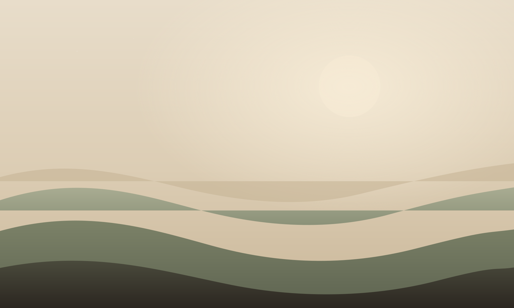
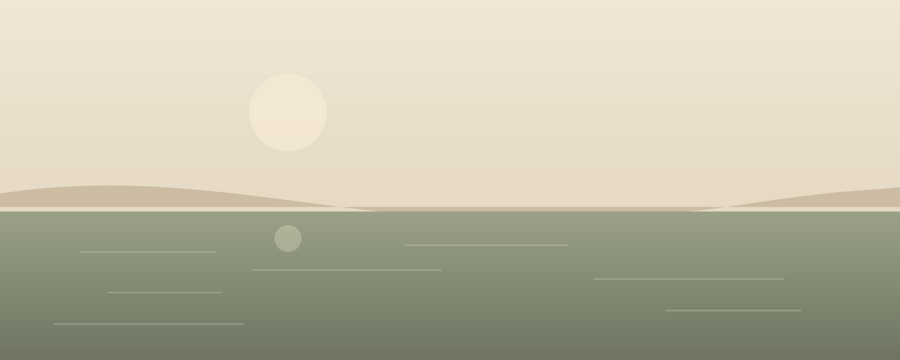

Body first, story second
We start with what is happening in your chest, your breath and your hands. Insight tends to arrive on its own once the body has somewhere safe to put itself down.

Holistic wellness & emotional healing
Healing that moves at the speed of your nervous system.
A small practice for people carrying more than they can name. We work with the body first and the story second, in sessions that are quiet, unhurried and entirely yours to steer.
Where we begin
Come as you are on the day — tired, guarded, mid-sentence.
Most people find their way here after a long stretch of holding everything together. The first session is not an excavation. It is a conversation about what your days actually feel like, and a first experiment in letting your shoulders drop an inch.
From there we build slowly: a practice you can carry into an ordinary Tuesday, not a programme that only works in a quiet room.
Read the full approach
How the work is held
Every session, every group and every follow-up message rests on the same three commitments.
We start with what is happening in your chest, your breath and your hands. Insight tends to arrive on its own once the body has somewhere safe to put itself down.
Nothing happens without a yes you can feel. You can pause, redirect or stop at any point, and doing so is treated as good information rather than resistance.
What we practise together has to survive a commute and a full inbox. You leave with something small and repeatable, not a second job.
Ways to work together
One-to-one, self-paced or alongside other people. Start wherever feels least effortful — you can always change route.
Sixty unhurried minutes of breath, gentle movement and tracking what the body is already trying to say.
A six-session arc for the patterns that keep repeating — the old loyalties, the reflex to shrink, the apology that arrives first.
A small seasonal group of six. Shared practice, shared quiet, and the particular relief of not being the only one.
First step
Tell me roughly what is going on. I'll tell you honestly whether this practice is the right fit, and where else to look if it isn't.